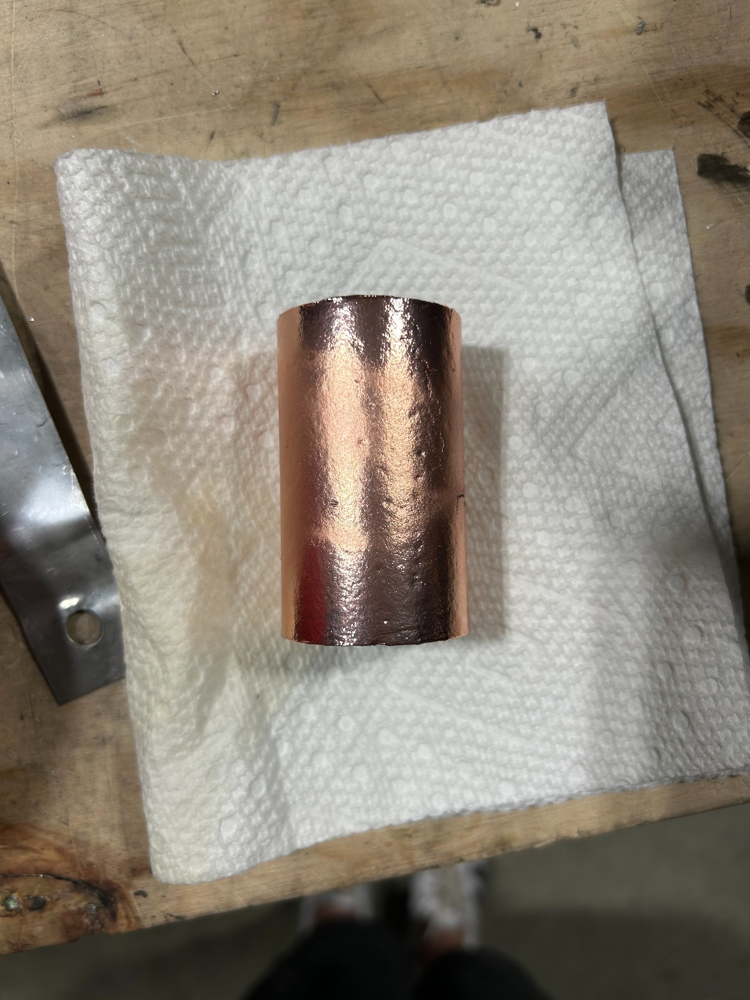
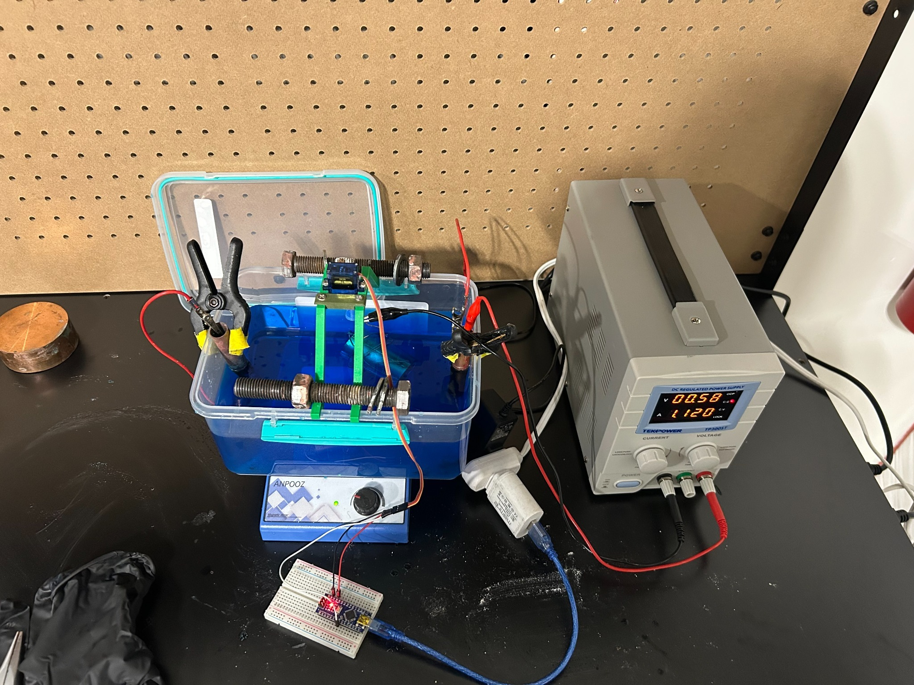

Copper Electroplating of 3D-Printed Hybrid Rocket Components
Developed and refined a copper electroplating process for 3D-printed thermoplastic components used in hybrid rocket motors. The objective was to improve thermal resistance, erosion durability, and structural integrity during high-temperature static fire testing.
Project Overview
This work focused on building a repeatable copper electroplating workflow for 3D-printed parts. Key challenges included achieving reliable adhesion on thermoplastics, maintaining uniform coating thickness, and controlling deposition through current density and bath conditions.
Example plated component showing copper finish and coverage.
Process & Setup
A benchtop electroplating system was assembled to control voltage/current, plating time, and bath parameters. Surface preparation and fixturing were optimized to improve conductivity, reduce defects, and support consistent deposition across complex geometries.
Plating setup used to control current density and repeat plating runs.
My Role & Contributions
- Developed a repeatable copper electroplating workflow for 3D-printed thermoplastics.
- Performed surface preparation (sanding, cleaning, and conductive coating application).
- Controlled bath parameters, current density, and plating time to optimize adhesion and thickness.
- Evaluated coating uniformity and adhesion quality through inspection and handling tests.
- Documented process settings to support repeatability and scaling for future parts.
Outcomes & Results
- Achieved copper coatings with strong adhesion to printed substrates.
- Improved thermal durability and erosion resistance for propulsion-relevant hardware.
- Established a repeatable workflow suitable for iterating rocket components.
Tools & Technologies
- Electroplating: Power supplies, copper baths, anodes/cathode fixturing
- Manufacturing: 3D printing (thermoplastics), surface prep and coating
- Testing: Post-process inspection, handling/adhesion checks
- Application: Hybrid rocket motor components